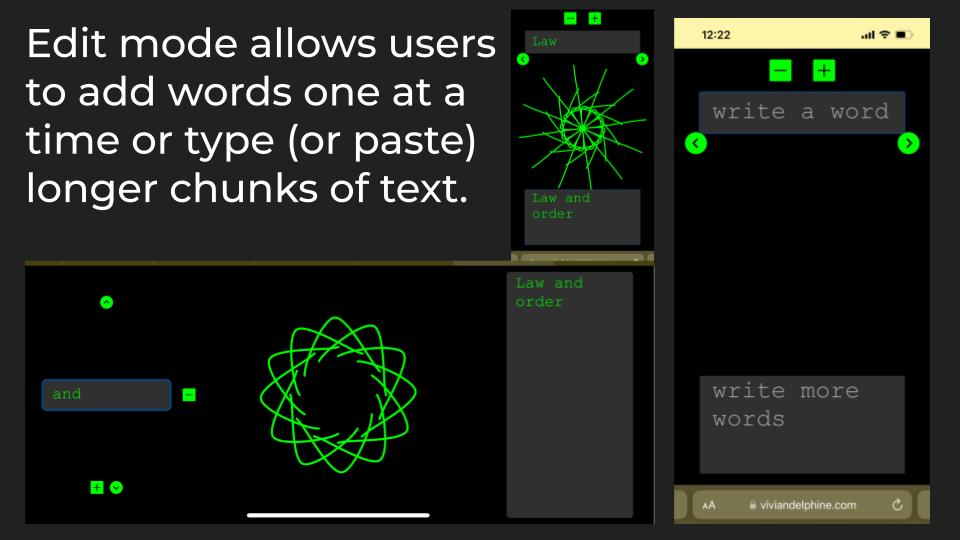

I came up with this concept as part of a class (CS 73: Code, Data, and Art). I wanted to create an art project that visualized data (the data being any set of words), and turned it into an art piece. I liked the idea that this art piece would be able to visualize any set of words, rather than being specialized for a particular kind of data.
I wrote the code in p5.js, a JavaScript library specialized for digital generative and interactive art projects. I created a system for turning any word into a squiggle.
First, I created a location for each letter of the alphabet on a circle. The distance from the center was the letter's place in tha alphabet. (Earlier letters are closer to the center, later letters are further away.) The angle of the letter was based on its frequency in the English language. By representing two pieces of data about every letter, I hoped to avoid having letters too close together too often, as that would lead to less interesting squiggles. By creating a wiggly line between the point representing each letter, I get a squiggle for every word.
Once each word had a squiggle, I liked the look of duplicating the squiggle 12 times to create a symmetrical design for each word. Since the appearance resembled a flower, I called the program WordFlower.
I then added functionality for the user to be able to edit the words. I created a second screen in hacker-green that allowed words to be inputted one at a time or all at once.
Once on the wordflower page (link below), simply click/tap the screen to get started and then input whatever words or sentences you would like to visualize. Then click/tap again to return to the main screen.
© 2024 Nadine Jackson